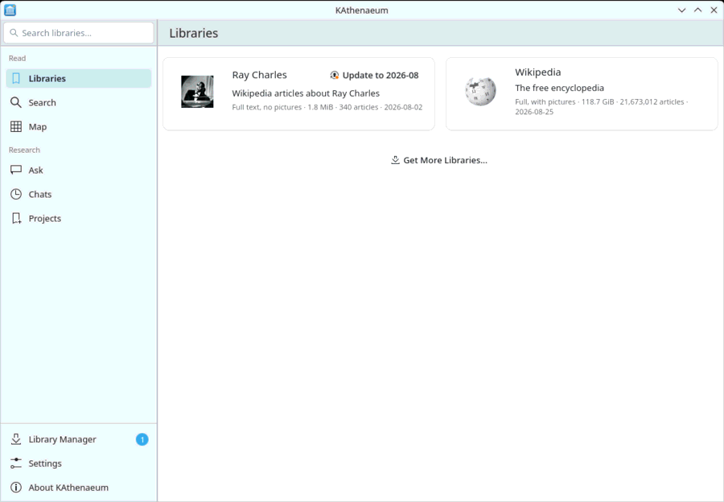
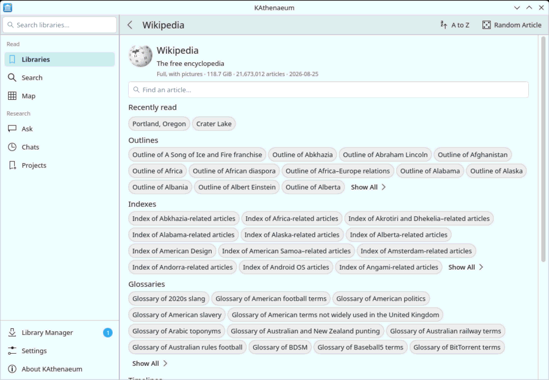

Libraries shows a card for each installed library. Open one to see its home: its description, a box to find an article by title, the articles you read recently, and Wikipedia's own overview articles (“Outline of…”, “Index of…”, “Glossary of…”, “Timeline of…”, “List of…”). lists every one of a kind.
lists every article by title, a letter at a time; opens one by chance.
